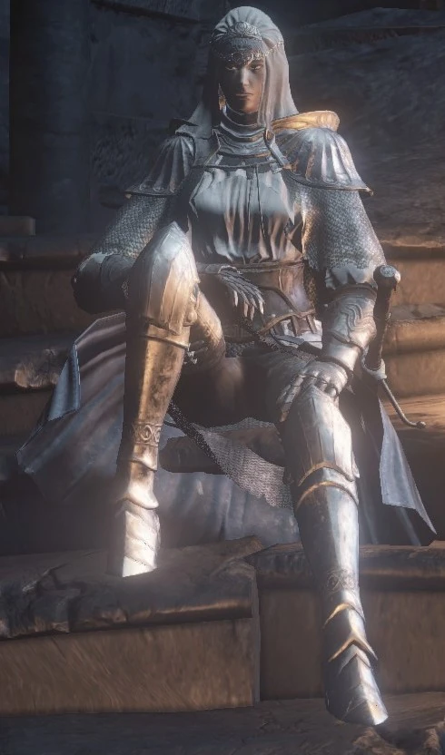

← Volver
← Volver
Sirris de los Reinos sin Sol es un NPC de Dark Souls III. Sirris es una miembro de las Espadas de la Luna Oscura que se encuentra en una misión para acabar con su abuelo, Hodrick. Ella es un personaje invocable que también puede solicitarte asistencia cuando necesite ayuda con sus oponentes. Su primer encuentro es en el Santuario del Enlace de Fuego luego de haber encendido la hoguera del Fuerte a Medio Camino.
No podrás interactuar con ella la primera vez porque ella se retirará justo después, pero en su segundo encuentro, cuando le entregas las Cenizas del Cazador de Sueños a la Sierva del Santuario, ella se presenta nuevamente en el Santuario del Enlace. Durante este segundo encuentro, ella te enseña el gesto de "Lealtad a la Luna Oscura".
| Objetos | Variante | Cantidad | Probabilidad | Suerte |
|---|---|---|---|---|
| Talismán sin Sol |
|
1 | 10% | No |
Diálogo del primer encuentro (Santuario del Enlace de Fuego)
"Mm, eres un No Encendido, ¿verdad? Soy Sirris, de los Reinos Sin Sol, antigua sirviente de la Divinidad. Cada uno tiene deberes, pero cada uno es un asunto solitario. Dudo que tengamos mucho que ganar confraternizando. Que la luna bendiga tu viaje."
Segundo encuentro (Santuario del Enlace de Fuego)
"Hola de nuevo. He oído hablar mucho de ti. Para empezar, que eres muy bondadoso. Yo también estoy obligada por el deber, pero puedo ofrecerte mi señal. He oído que una intrusión cordial prepara el camino hacia las brasas. Si puedo ayudarte, por favor, llámame. Bendición de la luna en tu viaje."
Si necesitas ayuda, usa mi señal. Bendición de la luna en tu viaje.
Al ayudarla a derrotar a Creighton el Errante
"Gracias por tu amable ayuda. Que la luna bendiga tu viaje."
Tercer encuentro (Santuario del Enlace de Fuego)
"Mm, no te he agradecido por tu generoso rescate. Ese Espíritu Oscuro era uno de los Dedos de Rosaria. Viles vástagos bastardos que acechan en la oscuridad. Mis enemigos jurados. Temibles invasores, como mínimo. No lo habría logrado sola. Tienes mi más profunda gratitud."
"Si necesitas ayuda en tus viajes, te ofrezco mi señal. Bendición de la luna para tu viaje."
Al enfrentarse al Caballero Sagrado Hodrick
"Por fin te encontré. Tal como te prometí, abuelo, ¿recuerdas? Buenas noches, abuelo..."
Cuarto encuentro (Santuario del Enlace de Fuego)
"Ah, ahí estás. Me temo que te he involucrado en mis asuntos, por una pequeña promesa, además. Te agradezco sinceramente tu ayuda. Por fin, mi abuelo descansará en paz y yo podré morir. Pero hay... una última cosa. ¿Puedo hacer un voto? Servirte como caballero."
Si rechazas su voto
"Sí, por supuesto. Me temo que me he excedido. Pero si alguna vez lo reconsideras y me permites confesarme ante ti... No dudes en hablar. Que la luna te bendiga en tu viaje."
"Oh, hola de nuevo. ¿Puedo confesarme ante ti? Como un caballero fiel, tuyo y leal."
Si aceptas su voto de caballero
"Oh, estoy muy agradecida. Yo, Sirris, sirvo como vuestra fiel caballero. Dondequiera y cuando sea necesario, e incluso si todo se vuelve en vuestra contra... Mi lealtad jamás flaqueará. Que la luna bendiga vuestro viaje. Si alguna vez os puedo ayudar, llamadme. Soy vuestra caballero, para siempre. Que la luna bendiga vuestro viaje."
Al unirte al aquelarre de los Dedos de Rosaria
"Mm, veo que ahora eres un Dedo de Rosaria. Tu camino es completamente diferente al mío. Gentil No Encendido, me despido de ti. Si nos volvemos a encontrar, será como adversarios."
Al enfrentarla luego de unirte a los Dedos de Rosaria
"Sí, ya veo, te has convertido en un dedo errante. Muy bien. Cortaré cada dedo de la mano."
Al matarla
"Perdóname, abuelo..."

 ↑
↑